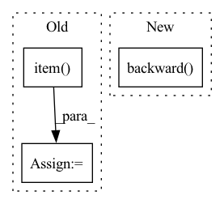

Pattern ID :1540
Before Change
self._optimizer.step()
loss_agg += loss.item()
loss_bbox_agg += loss_bbox.item()
loss_giou_agg += loss_giou.item()
loss_cls_agg += loss_cls.item()
After Change
loss_abs += loss_val * self._loss_coefs[loss_key.split("_")[0]]
self._optimizer.zero_grad()
loss_abs.backward()
// Clip grads to counter exploding grads
max_norm = self._train_config["clip_max_norm"]
if max_norm > 0:In pattern: SUPERPATTERN
Frequency: 4
Non-data size: 3
Instances Fragment ID: 6880537
Project Name: bwittmann/transoar
Commit Name: b168360cfaa2ea2a6bf4d82849fc82381329de4a
Time: 2021-12-02
Author: bastian.wittmann@tum.de
File Name: transoar/trainer.py
M Class Name: Trainer
N Class Name: Trainer
M Method Name: _train_one_epoch(2)
N Method Name: _train_one_epoch(2)
M Parent Class:
N Parent Class:
M File Name: transoar/trainer.py
N File Name: transoar/trainer.py
M Start Line: 42
M End Line: 82
N Start Line: 45
N End Line: 83
Before Change
loss_bbox_agg += loss_dict["bbox"].item()
loss_giou_agg += loss_dict["giou"].item()
loss_cls_agg += loss_dict["cls"].item()
loss_peak_agg += loss_dict["peak"].item()
loss = loss_agg / len(self._train_loader)
loss_bbox = loss_bbox_agg / len(self._train_loader)
loss_giou = loss_giou_agg / len(self._train_loader)After Change
loss_abs += loss_val * self._config["loss_coefs"][loss_key.split("_")[0]]
self._optimizer.zero_grad()
self._scaler.scale(loss_abs).backward()
// Clip grads to counter exploding grads
max_norm = self._config["clip_max_norm"]
if max_norm > 0: Fragment ID: 6880541
Project Name: bwittmann/transoar
Commit Name: 6d0ab8401e1a46fba05f2b17942949478bca68ec
Time: 2022-02-10
Author: bastian.wittmann@tum.de
File Name: transoar/trainer.py
M Class Name: Trainer
N Class Name: Trainer
M Method Name: _train_one_epoch(2)
N Method Name: _train_one_epoch(2)
M Parent Class:
N Parent Class:
M File Name: transoar/trainer.py
N File Name: transoar/trainer.py
M Start Line: 45
M End Line: 87
N Start Line: 55
N End Line: 78
Before Change
if self.max_norm:
nn.utils.clip_grad_norm_(self.model.parameters(), self.max_norm)
train_loss += loss.item()
if (idx + 1) % 100 == 0:
s = "[Epoch {}/{}] iter {}/{} loss:".format(epoch + 1, self.epochs, idx + 1, n_train_batch)
s += " {:.5f}".format(loss.item())After Change
mean_loss = loss.mean(dim=0)
self.optimizer.zero_grad()
mean_loss.backward()
if self.max_norm:
nn.utils.clip_grad_norm_(self.model.parameters(), self.max_norm)
Fragment ID: 6880546
Project Name: tky823/dnn-based_source_separation
Commit Name: 84cad5184ccab316e3675dc3f6c07c11e5d09277
Time: 2021-10-29
Author: delta9guitar97@gmail.com
File Name: egs/musdb18/x-umx/src/adhoc_driver.py
M Class Name: AdhocSchedulerTrainer
N Class Name: AdhocSchedulerTrainer
M Method Name: run_one_epoch_train(2)
N Method Name: run_one_epoch_train(2)
M Parent Class: TrainerBase
N Parent Class: TrainerBase
M File Name: egs/musdb18/x-umx/src/adhoc_driver.py
N File Name: egs/musdb18/x-umx/src/adhoc_driver.py
M Start Line: 120
M End Line: 148
N Start Line: 139
N End Line: 182
Before Change
s += " {:.5f}".format(loss.item())
else:
for target, loss_target in zip(self.sources, loss):
s += " ({}) {:.5f}".format(target, loss_target.item() )
print(s, flush=True)
After Change
loss = self.criterion(estimated_sources_amplitude, sources)
self.optimizer.zero_grad()
loss.backward()
if self.max_norm:
nn.utils.clip_grad_norm_(self.model.parameters(), self.max_norm)
Fragment ID: 6880551
Project Name: tky823/dnn-based_source_separation
Commit Name: bf70dea849c1cff19a964ec7fd718c22cc07ff01
Time: 2021-10-29
Author: delta9guitar97@gmail.com
File Name: egs/musdb18/x-umx/src/adhoc_driver.py
M Class Name: AdhocSchedulerTrainer
N Class Name: AdhocSchedulerTrainer
M Method Name: run_one_epoch_train(2)
N Method Name: run_one_epoch_train(2)
M Parent Class: TrainerBase
N Parent Class: TrainerBase
M File Name: egs/musdb18/x-umx/src/adhoc_driver.py
N File Name: egs/musdb18/x-umx/src/adhoc_driver.py
M Start Line: 145
M End Line: 188
N Start Line: 138
N End Line: 150